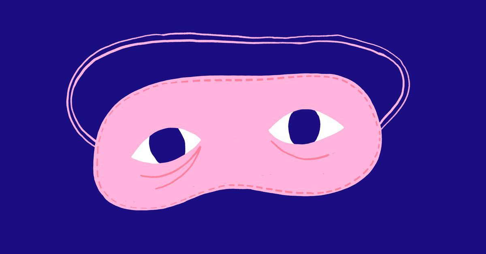
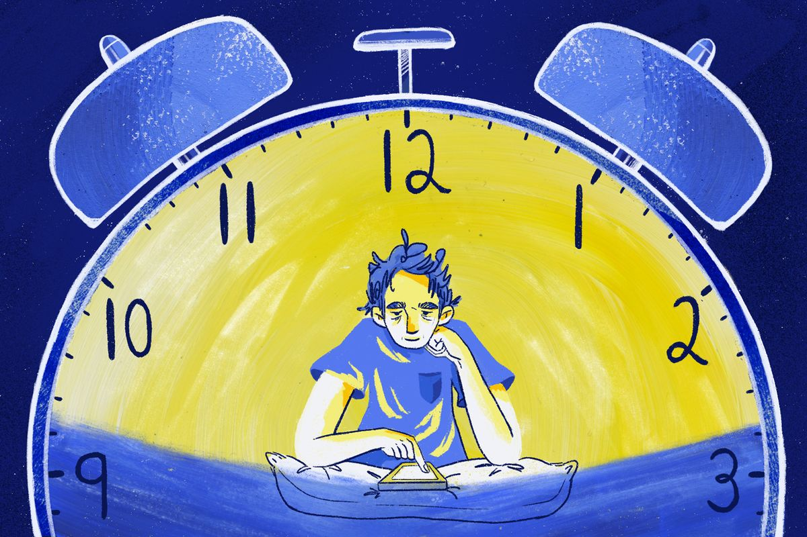

The Physical Experience of Insomnia
Insomnia is not just a problem of the mind—it also leaves strong marks on the body. The longer one stays awake, the more the body begins to resist and protest.
Insomnia Beyond the Mind
Insomnia is not just a problem of the mind—it also leaves strong marks on the body. The longer one stays awake, the more the body begins to resist and protest.
Immediate Physical Sensations
One of the most immediate sensations is eye strain. After hours of wakefulness, the eyes feel heavy, dry, and sore, yet they refuse to close. The heartbeat often speeds up at night, as if the body is on alert even without any real danger. Muscles grow tense, and the stomach sometimes churns, creating a feeling of unease that makes rest even harder.
The Weight of Time on the Body
Time itself seems to weigh on the body. A single hour can feel like an endless stretch of discomfort. Even lying still becomes exhausting—the pressure in the chest, the tossing and turning, the subtle aches in the back and neck all accumulate through the night.

My Personal Experience
From my own experience, insomnia feels like carrying a physical burden. I remember nights when my head ached as if it were filled with fog, and my skin grew sensitive to even the smallest sounds or changes in temperature. These physical symptoms create a vicious cycle: the more uncomfortable the body feels, the more the mind stays awake, and the further away sleep drifts.